Project Title
DateWhat I Did
Details...
How I Did It
Details...
Success & Impact
Details...
Selected Initiatives & Research
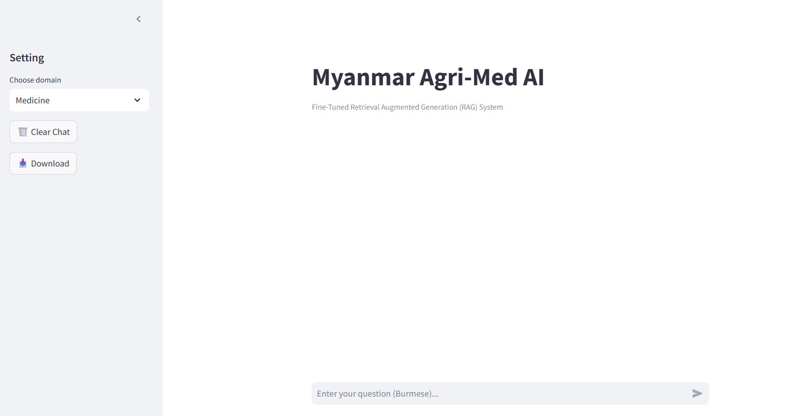
Mar 30, 2026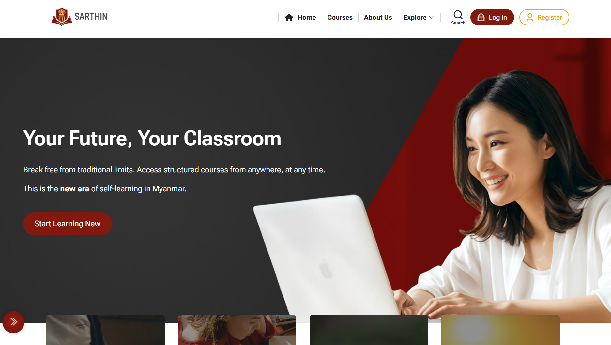
Dec 18, 2025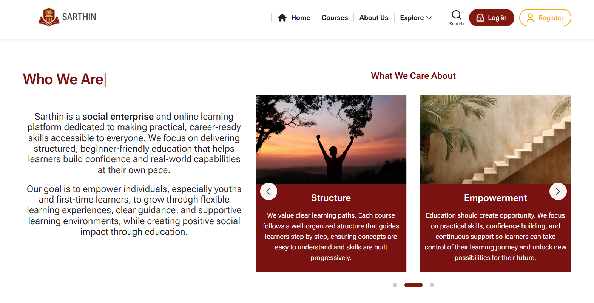
Aug 2025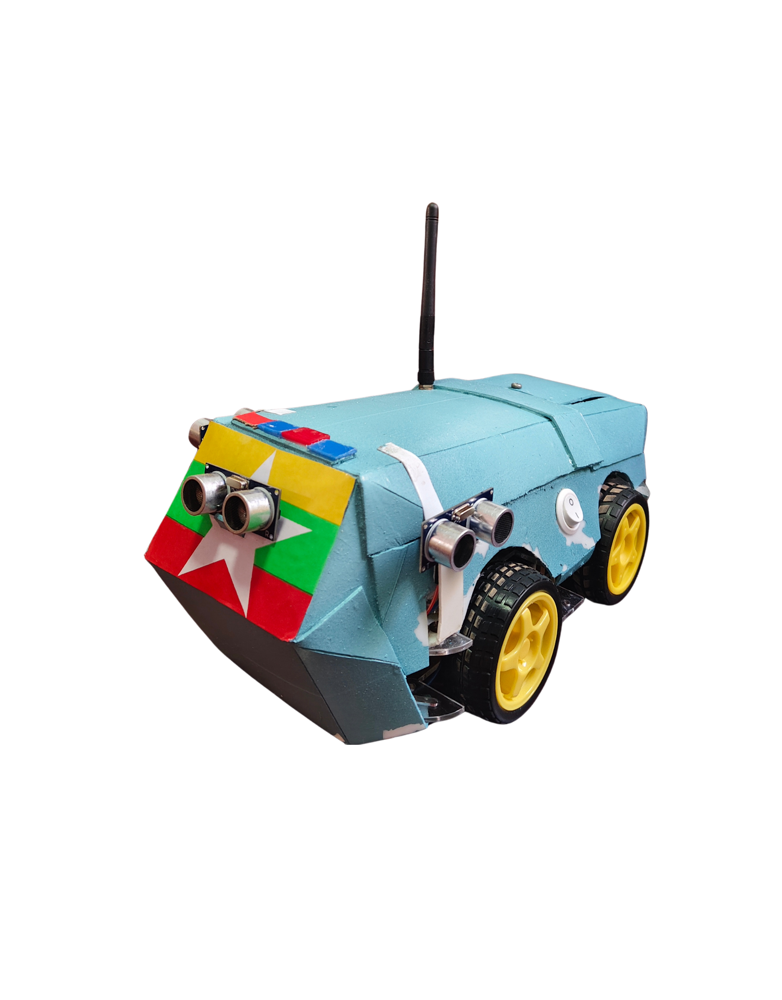
Mar 2025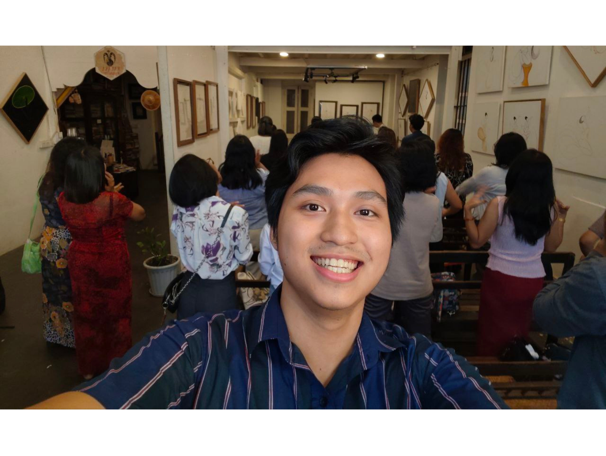
Oct 2023 - Jan 2024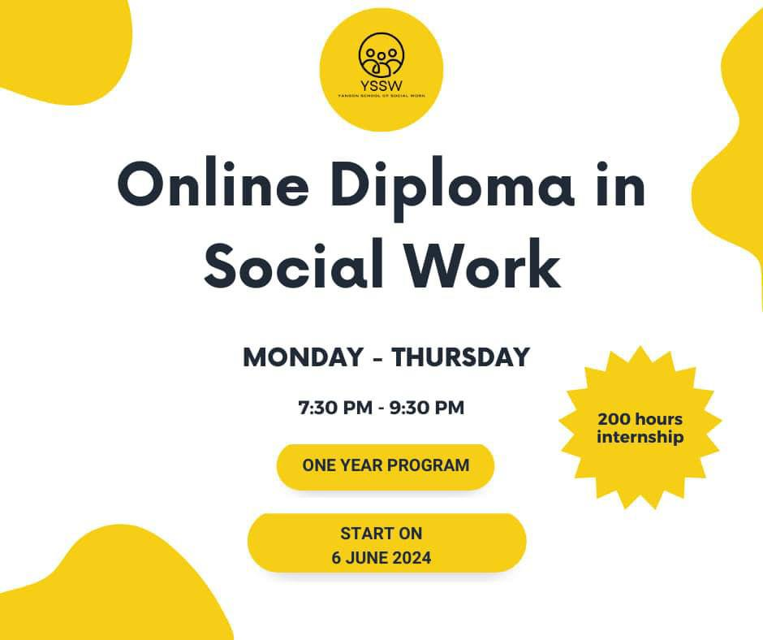
Jun 2024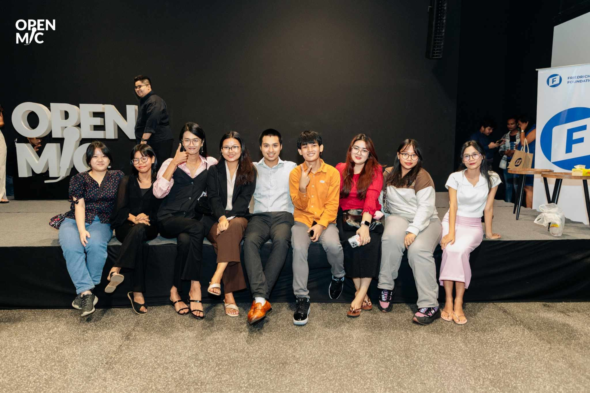
May 2024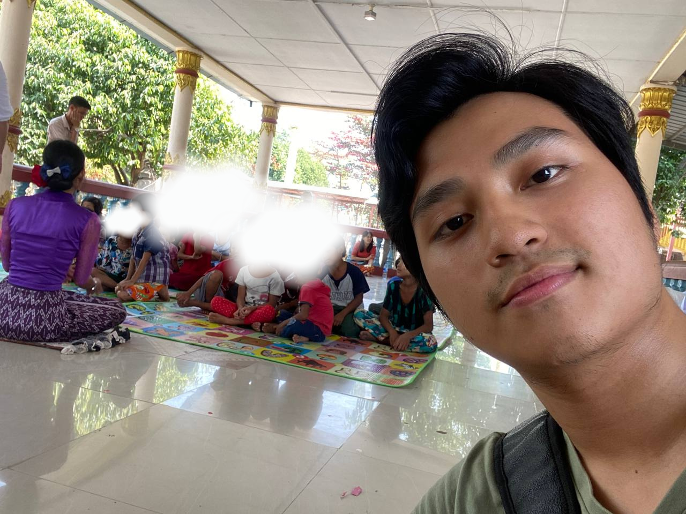
Jan - Feb 2024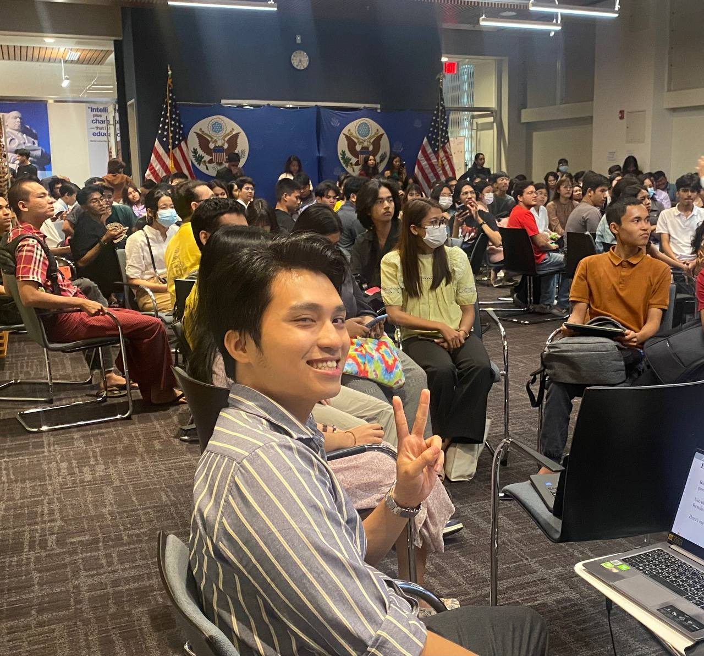
Dec 2023 - Mar 2024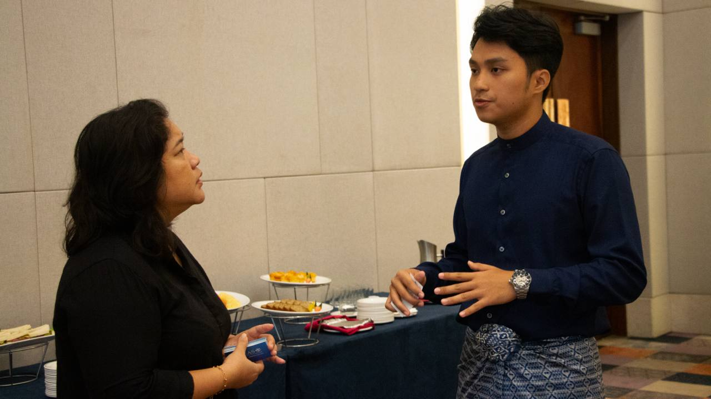
Aug 10, 2023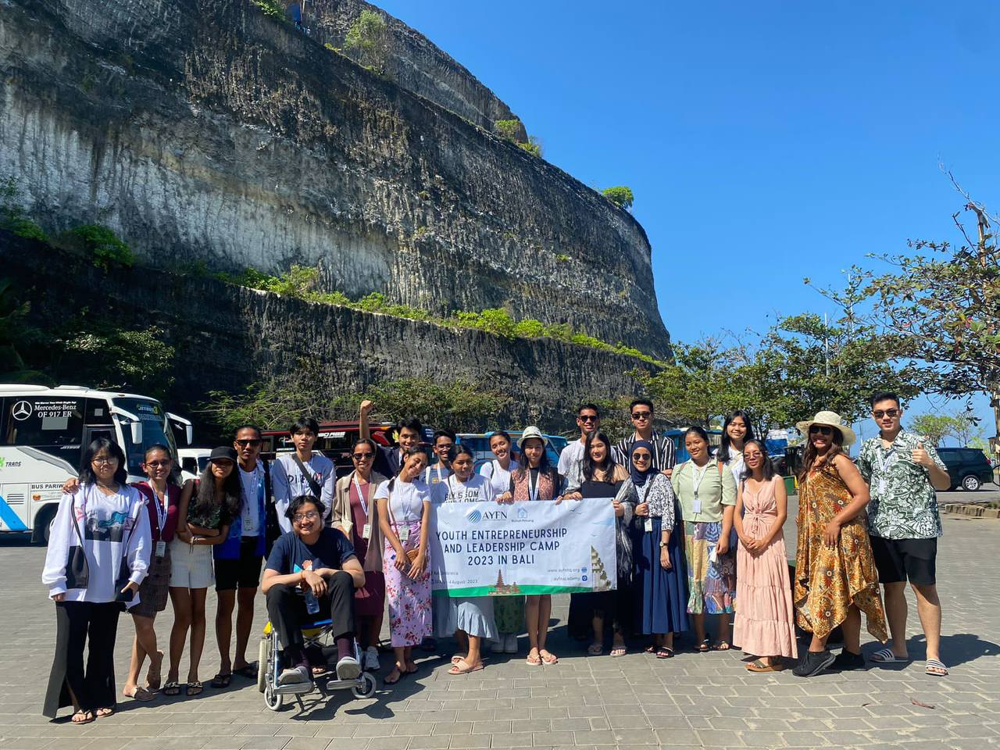
Jul 29, 2023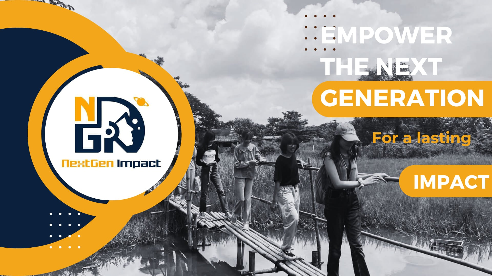
Mar - Aug 2023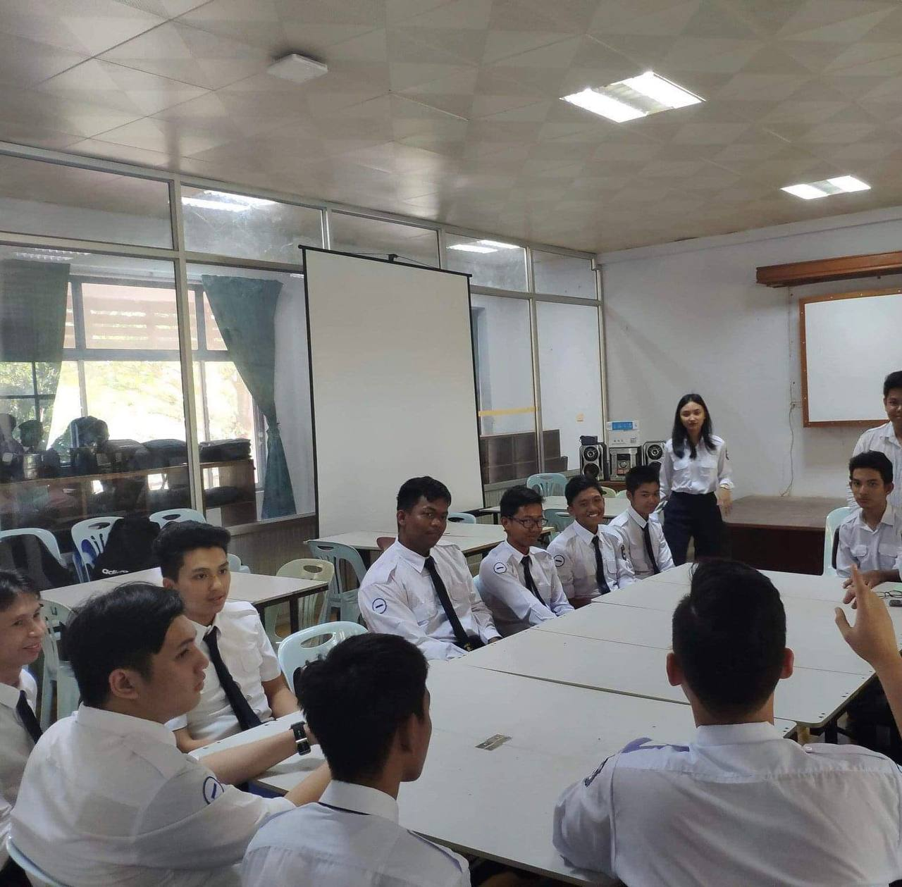
Apr 2020 - Mar 2021Details...
Details...
Details...